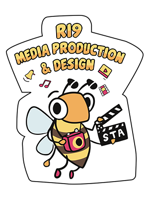
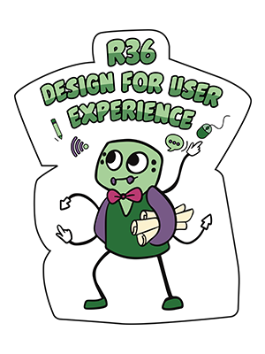
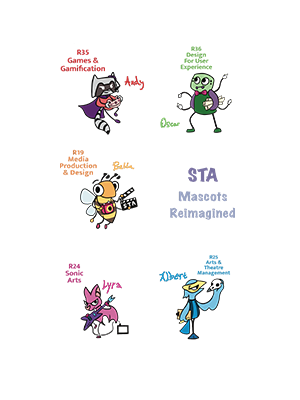
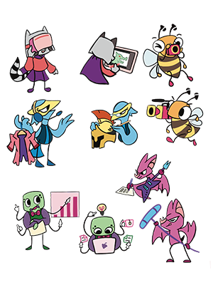
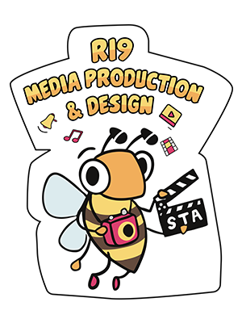
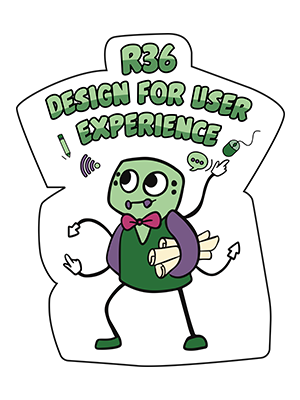
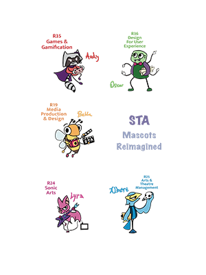
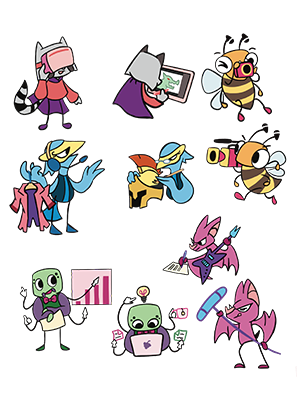

Works
Celebrate the achievements of our graduates
Overview of the project
Celebrate the achievements of our graduates with a captivating 1-2 minute video showcasing the memorable May 5th ceremony from 3-7pm. Experience the joy of students, parents, and mentors through vox pop interviews. Witness the dedication of final year projects from diverse diploma programs in a 7-10 min film, capturing their journey from concept to execution. Transmedia storytelling ideas will highlight STA's unique qualities, challenges, and outstanding achievements in graphic and motion graphics formats. Join us in commemorating their hard work and success!
Portfolio
My creative process
Three contribution they have made that helped the project to improve and succeed
2. Script and Shot Planning for Graduation Video:
1. One of my significant contributions to the project was my dedicated approach to script and shot planning for the graduation video. I proactively took charge of creating a detailed script that carefully outlined the video's content and flow. Additionally, I envisioned potential shots that could capture the crucial moments during the ceremony, aiming to ensure a well-executed video on the day of the event. However, I also recognized the importance of teamwork and improvement in execution. To address this, I actively encouraged collaborative discussions with my teammates, seeking their input in decision-making, and practiced camera work together to enhance our skills. Moving forward, I remain committed to meticulous planning and continuous learning, which will undoubtedly lead to even better results in future projects.
 







2. Designing Impactful Standees, Merchandise, and T-shirts:
Another significant contribution I made to the project's success was my role in designing compelling standees, merchandise, and t-shirts. I approached this task with an audience-centric mindset, ensuring that the designs resonated with the target audience. A key focus was maintaining brand consistency, and to achieve this, I meticulously selected captivating visuals, bold messaging, and attention-grabbing colors. As a result, the standees effectively conveyed the project's core message and successfully engaged the interest of our target audience. This contribution not only added value to the project but also left a lasting impression on those who interacted with the project's branding materials.
3. Video Editing for Final Year Project and Graduation Ceremony:
I played a crucial role in video editing for both the final year project and the graduation ceremony, understanding the significance of these videos in effectively presenting the project's essence. To ensure the videos' impact, I took the initiative to carefully curate compelling clips and employed creative storytelling techniques. Moreover, I actively sought feedback from the project team and the intended audience during the editing process. By incorporating their valuable input and making necessary adjustments, the final video products were elevated to a higher level of polish and impact. As a result, these videos left a lasting impression on both the project team and the audience during the project's culmination, ensuring a memorable and successful presentation. - Three contribution they have made that helped the project to improve and succeed
Three important things they learned and overcame through their FYP
1. Thoughtful decision making
The first lesson they learned was the importance of not being too impulsive when making decisions. For instance, when faced with questions about assigning roles, they realized that it's essential to consider the perspectives of others and potential consequences. They understood that rushing into decisions without thoughtful consideration could lead to negative outcomes.
2. Effective organisation and communication
Another crucial lesson they acquired was the value of being organized and proactive in seeking clarification. They realized that delaying inquiries and leaving tasks until the last minute could lead to numerous problems and uncertainties. Therefore, they learned the significance of being proactive and seeking clarification early to avoid unnecessary challenges.
3. Self initiative and accountability
The final lesson was about recognizing that everyone may have their own challenges and responsibilities. Instead of solely relying on others or blaming teammates, they discovered the importance of taking personal initiative and responsibility. They understood that even if they were not in a leadership position, stepping up to contribute and address issues positively impacted the project's overall success. It taught them to be proactive and not shy away from challenges, fostering a sense of ownership and accountability.